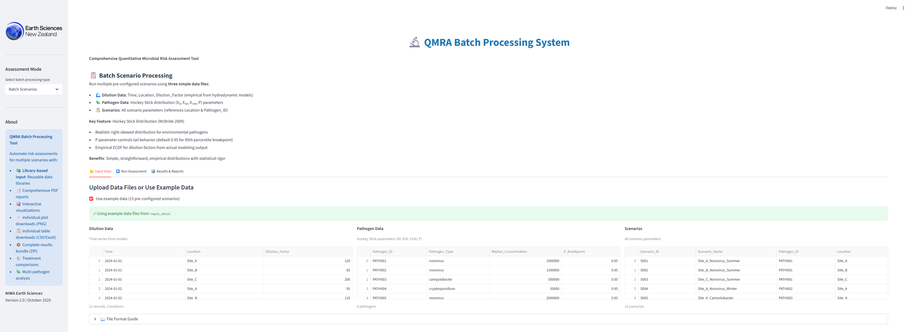

1. Home Page
Main application interface with sidebar navigation

Screenshots captured: 2025-11-05 10:37:26
Main application interface with sidebar navigation
Batch processing with 15 pre-configured scenarios

Multi-site risk assessment with dilution factors

Time-series risk analysis from monitoring data
Compare multiple treatment technologies

Evaluate multiple pathogens simultaneously